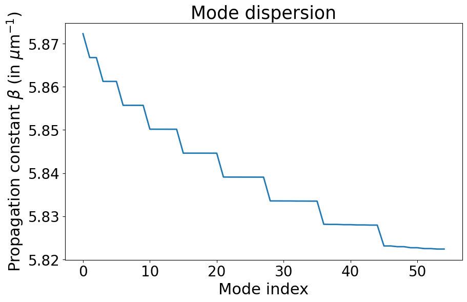
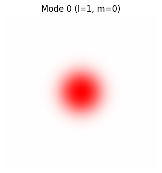
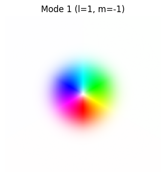
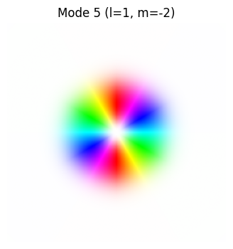
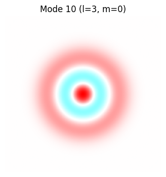
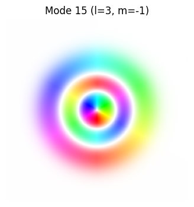
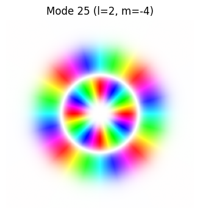
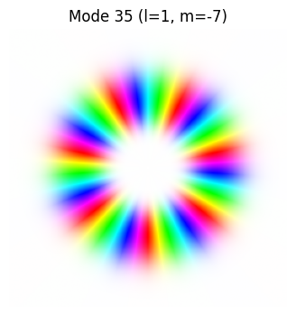

Graded index fiber using the radial solver#
[4]:
import matplotlib.pyplot as plt
import numpy as np
import pyMMF
from pyMMF.functions import colorize
1. Fiber parameters#
[5]:
NA = 0.2
radius = 25 # in microns
areaSize = 2.4*radius # calculate the field on an area larger than the diameter of the fiber
n_points_modes = 256 # resolution of the window
n1 = 1.45 # index of refraction at r=0 (maximum)
wl = 1.55 # wavelength in microns
curvature = None
k0 = 2.*np.pi/wl
r_max = 3.2*radius
npoints_search = 2**8
dh = 2*radius/npoints_search
# solver parameters
solver_options = {
'degenerate_mode': 'exp', # 'eig' or 'prop'
'min_radius_bc': 1.5, # min large radial boundary condition
'N_beta_coarse': 1_000, # number of steps of the initial coarse scan
'change_bc_radius_step': 0.95, #change of the large radial boundary condition if fails
'dh': dh, # radial resolution during the computation
'r_max': r_max, # max radius to calculate (and first try for large radial boundary condition)
}
2. Compute the mode with radial solver#
[6]:
profile = pyMMF.IndexProfile(
npoints = n_points_modes,
areaSize = areaSize
)
profile.initParabolicGRIN(n1=n1, a=radius, NA=NA)
solver = pyMMF.propagationModeSolver()
solver.setIndexProfile(profile)
solver.setWL(wl)
modes = solver.solve(solver='radial',
curvature = curvature,
options = solver_options
)
2024-09-10 13:08:37,330 - pyMMF.core [DEBUG ] Debug mode ON.
2024-09-10 13:08:37,331 - pyMMF.solv [INFO ] Searching for modes with beta_min=5.821637357564584, beta_max=5.877818513168
2024-09-10 13:08:37,341 - pyMMF.solv [INFO ] Found 5 radial mode(s) for m=0
2024-09-10 13:08:37,342 - pyMMF.solv [INFO ] Searching propagation constant for |l| = 1
2024-09-10 13:08:37,343 - pyMMF.solv [ERROR ] Field limit 1.0 at the founded beta=0.05066217542815342 is greater than field_limit_tol=0.001
2024-09-10 13:08:37,343 - pyMMF.solv [WARNING] Boundary condition could not be met.
2024-09-10 13:08:37,344 - pyMMF.solv [WARNING] Retrying by changing r_max to 3.04a
2024-09-10 13:08:37,346 - pyMMF.solv [ERROR ] Field limit 1.0 at the founded beta=0.05066217542815342 is greater than field_limit_tol=0.001
2024-09-10 13:08:37,346 - pyMMF.solv [WARNING] Boundary condition could not be met.
2024-09-10 13:08:37,346 - pyMMF.solv [WARNING] Retrying by changing r_max to 2.89a
2024-09-10 13:08:37,348 - pyMMF.solv [ERROR ] Field limit 1.0 at the founded beta=0.05066217542815342 is greater than field_limit_tol=0.001
2024-09-10 13:08:37,349 - pyMMF.solv [WARNING] Boundary condition could not be met.
2024-09-10 13:08:37,349 - pyMMF.solv [WARNING] Retrying by changing r_max to 2.74a
2024-09-10 13:08:37,351 - pyMMF.solv [ERROR ] Field limit 1.0 at the founded beta=0.05066217542815342 is greater than field_limit_tol=0.001
2024-09-10 13:08:37,351 - pyMMF.solv [WARNING] Boundary condition could not be met.
2024-09-10 13:08:37,352 - pyMMF.solv [WARNING] Retrying by changing r_max to 2.61a
2024-09-10 13:08:37,353 - pyMMF.solv [ERROR ] Field limit 1.0 at the founded beta=0.05066217542815342 is greater than field_limit_tol=0.001
2024-09-10 13:08:37,353 - pyMMF.solv [WARNING] Boundary condition could not be met.
2024-09-10 13:08:37,353 - pyMMF.solv [WARNING] Retrying by changing r_max to 2.48a
2024-09-10 13:08:37,354 - pyMMF.solv [ERROR ] Field limit 1.0 at the founded beta=0.05066217542815342 is greater than field_limit_tol=0.001
2024-09-10 13:08:37,354 - pyMMF.solv [WARNING] Boundary condition could not be met.
2024-09-10 13:08:37,354 - pyMMF.solv [WARNING] Retrying by changing r_max to 2.35a
2024-09-10 13:08:37,355 - pyMMF.solv [ERROR ] Field limit 1.0 at the founded beta=0.05066217542815342 is greater than field_limit_tol=0.001
2024-09-10 13:08:37,355 - pyMMF.solv [WARNING] Boundary condition could not be met.
2024-09-10 13:08:37,355 - pyMMF.solv [WARNING] Retrying by changing r_max to 2.23a
2024-09-10 13:08:37,356 - pyMMF.solv [ERROR ] Field limit 0.15890344703001363 at the founded beta=0.05066217542815336 is greater than field_limit_tol=0.001
2024-09-10 13:08:37,356 - pyMMF.solv [WARNING] Boundary condition could not be met.
2024-09-10 13:08:37,356 - pyMMF.solv [WARNING] Retrying by changing r_max to 2.12a
2024-09-10 13:08:37,357 - pyMMF.solv [ERROR ] Field limit 0.019903905112596845 at the founded beta=0.05066217542815337 is greater than field_limit_tol=0.001
2024-09-10 13:08:37,357 - pyMMF.solv [WARNING] Boundary condition could not be met.
2024-09-10 13:08:37,357 - pyMMF.solv [WARNING] Retrying by changing r_max to 2.02a
2024-09-10 13:08:37,358 - pyMMF.solv [ERROR ] Field limit 0.002496484384560775 at the founded beta=0.05066217542815341 is greater than field_limit_tol=0.001
2024-09-10 13:08:37,358 - pyMMF.solv [WARNING] Boundary condition could not be met.
2024-09-10 13:08:37,358 - pyMMF.solv [WARNING] Retrying by changing r_max to 1.92a
2024-09-10 13:08:37,363 - pyMMF.solv [INFO ] Searching propagation constant for |l| = 2
2024-09-10 13:08:37,364 - pyMMF.solv [ERROR ] Field limit -1.0 at the founded beta=0.03961031292887776 is greater than field_limit_tol=0.001
2024-09-10 13:08:37,364 - pyMMF.solv [WARNING] Boundary condition could not be met.
2024-09-10 13:08:37,364 - pyMMF.solv [WARNING] Retrying by changing r_max to 3.04a
2024-09-10 13:08:37,365 - pyMMF.solv [ERROR ] Field limit -1.0 at the founded beta=0.03961031292887776 is greater than field_limit_tol=0.001
2024-09-10 13:08:37,365 - pyMMF.solv [WARNING] Boundary condition could not be met.
2024-09-10 13:08:37,365 - pyMMF.solv [WARNING] Retrying by changing r_max to 2.89a
2024-09-10 13:08:37,366 - pyMMF.solv [ERROR ] Field limit -1.0 at the founded beta=0.03961031292887776 is greater than field_limit_tol=0.001
2024-09-10 13:08:37,366 - pyMMF.solv [WARNING] Boundary condition could not be met.
2024-09-10 13:08:37,366 - pyMMF.solv [WARNING] Retrying by changing r_max to 2.74a
2024-09-10 13:08:37,367 - pyMMF.solv [ERROR ] Field limit 0.6787453967570178 at the founded beta=0.03961031292887755 is greater than field_limit_tol=0.001
2024-09-10 13:08:37,367 - pyMMF.solv [WARNING] Boundary condition could not be met.
2024-09-10 13:08:37,368 - pyMMF.solv [WARNING] Retrying by changing r_max to 2.61a
2024-09-10 13:08:37,368 - pyMMF.solv [ERROR ] Field limit 0.07283564229338893 at the founded beta=0.03961031292887755 is greater than field_limit_tol=0.001
2024-09-10 13:08:37,369 - pyMMF.solv [WARNING] Boundary condition could not be met.
2024-09-10 13:08:37,369 - pyMMF.solv [WARNING] Retrying by changing r_max to 2.48a
2024-09-10 13:08:37,370 - pyMMF.solv [ERROR ] Field limit 0.007826230476869131 at the founded beta=0.03961031292887762 is greater than field_limit_tol=0.001
2024-09-10 13:08:37,370 - pyMMF.solv [WARNING] Boundary condition could not be met.
2024-09-10 13:08:37,371 - pyMMF.solv [WARNING] Retrying by changing r_max to 2.35a
2024-09-10 13:08:37,375 - pyMMF.solv [INFO ] Searching propagation constant for |l| = 3
2024-09-10 13:08:37,376 - pyMMF.solv [ERROR ] Field limit 1.0 at the founded beta=0.028541272457537663 is greater than field_limit_tol=0.001
2024-09-10 13:08:37,376 - pyMMF.solv [WARNING] Boundary condition could not be met.
2024-09-10 13:08:37,377 - pyMMF.solv [WARNING] Retrying by changing r_max to 3.04a
2024-09-10 13:08:37,377 - pyMMF.solv [ERROR ] Field limit -0.48699642863673637 at the founded beta=0.028541272457537452 is greater than field_limit_tol=0.001
2024-09-10 13:08:37,378 - pyMMF.solv [WARNING] Boundary condition could not be met.
2024-09-10 13:08:37,378 - pyMMF.solv [WARNING] Retrying by changing r_max to 2.89a
2024-09-10 13:08:37,379 - pyMMF.solv [ERROR ] Field limit -0.05871870966179392 at the founded beta=0.028541272457537393 is greater than field_limit_tol=0.001
2024-09-10 13:08:37,379 - pyMMF.solv [WARNING] Boundary condition could not be met.
2024-09-10 13:08:37,379 - pyMMF.solv [WARNING] Retrying by changing r_max to 2.74a
2024-09-10 13:08:37,380 - pyMMF.solv [ERROR ] Field limit -0.00708939795496355 at the founded beta=0.02854127245753754 is greater than field_limit_tol=0.001
2024-09-10 13:08:37,381 - pyMMF.solv [WARNING] Boundary condition could not be met.
2024-09-10 13:08:37,381 - pyMMF.solv [WARNING] Retrying by changing r_max to 2.61a
2024-09-10 13:08:37,382 - pyMMF.solv [ERROR ] Field limit -0.0010706266399648353 at the founded beta=0.028541272457537417 is greater than field_limit_tol=0.001
2024-09-10 13:08:37,382 - pyMMF.solv [WARNING] Boundary condition could not be met.
2024-09-10 13:08:37,382 - pyMMF.solv [WARNING] Retrying by changing r_max to 2.48a
2024-09-10 13:08:37,387 - pyMMF.solv [INFO ] Searching propagation constant for |l| = 4
2024-09-10 13:08:37,393 - pyMMF.solv [INFO ] Searching propagation constant for |l| = 5
2024-09-10 13:08:37,407 - pyMMF.solv [INFO ] Found 5 radial mode(s) for m=1
2024-09-10 13:08:37,407 - pyMMF.solv [INFO ] Searching propagation constant for |l| = 1
2024-09-10 13:08:37,408 - pyMMF.solv [ERROR ] Field limit -1.0 at the founded beta=0.04513477880645375 is greater than field_limit_tol=0.001
2024-09-10 13:08:37,408 - pyMMF.solv [WARNING] Boundary condition could not be met.
2024-09-10 13:08:37,409 - pyMMF.solv [WARNING] Retrying by changing r_max to 3.04a
2024-09-10 13:08:37,409 - pyMMF.solv [ERROR ] Field limit -1.0 at the founded beta=0.04513477880645375 is greater than field_limit_tol=0.001
2024-09-10 13:08:37,409 - pyMMF.solv [WARNING] Boundary condition could not be met.
2024-09-10 13:08:37,410 - pyMMF.solv [WARNING] Retrying by changing r_max to 2.89a
2024-09-10 13:08:37,411 - pyMMF.solv [ERROR ] Field limit -1.0 at the founded beta=0.04513477880645375 is greater than field_limit_tol=0.001
2024-09-10 13:08:37,411 - pyMMF.solv [WARNING] Boundary condition could not be met.
2024-09-10 13:08:37,411 - pyMMF.solv [WARNING] Retrying by changing r_max to 2.74a
2024-09-10 13:08:37,412 - pyMMF.solv [ERROR ] Field limit -1.0 at the founded beta=0.04513477880645375 is greater than field_limit_tol=0.001
2024-09-10 13:08:37,412 - pyMMF.solv [WARNING] Boundary condition could not be met.
2024-09-10 13:08:37,413 - pyMMF.solv [WARNING] Retrying by changing r_max to 2.61a
2024-09-10 13:08:37,413 - pyMMF.solv [ERROR ] Field limit -1.0 at the founded beta=0.04513477880645375 is greater than field_limit_tol=0.001
2024-09-10 13:08:37,414 - pyMMF.solv [WARNING] Boundary condition could not be met.
2024-09-10 13:08:37,414 - pyMMF.solv [WARNING] Retrying by changing r_max to 2.48a
2024-09-10 13:08:37,415 - pyMMF.solv [ERROR ] Field limit -1.0 at the founded beta=0.04513477880645375 is greater than field_limit_tol=0.001
2024-09-10 13:08:37,415 - pyMMF.solv [WARNING] Boundary condition could not be met.
2024-09-10 13:08:37,415 - pyMMF.solv [WARNING] Retrying by changing r_max to 2.35a
2024-09-10 13:08:37,416 - pyMMF.solv [ERROR ] Field limit 0.18817122393070848 at the founded beta=0.04513477880645395 is greater than field_limit_tol=0.001
2024-09-10 13:08:37,416 - pyMMF.solv [WARNING] Boundary condition could not be met.
2024-09-10 13:08:37,416 - pyMMF.solv [WARNING] Retrying by changing r_max to 2.23a
2024-09-10 13:08:37,417 - pyMMF.solv [ERROR ] Field limit 0.023019622332721736 at the founded beta=0.04513477880645401 is greater than field_limit_tol=0.001
2024-09-10 13:08:37,417 - pyMMF.solv [WARNING] Boundary condition could not be met.
2024-09-10 13:08:37,417 - pyMMF.solv [WARNING] Retrying by changing r_max to 2.12a
2024-09-10 13:08:37,418 - pyMMF.solv [ERROR ] Field limit 0.003243344452230191 at the founded beta=0.04513477880645405 is greater than field_limit_tol=0.001
2024-09-10 13:08:37,419 - pyMMF.solv [WARNING] Boundary condition could not be met.
2024-09-10 13:08:37,419 - pyMMF.solv [WARNING] Retrying by changing r_max to 2.02a
2024-09-10 13:08:37,428 - pyMMF.solv [INFO ] Searching propagation constant for |l| = 2
2024-09-10 13:08:37,429 - pyMMF.solv [ERROR ] Field limit 1.0 at the founded beta=0.034070167189183195 is greater than field_limit_tol=0.001
2024-09-10 13:08:37,429 - pyMMF.solv [WARNING] Boundary condition could not be met.
2024-09-10 13:08:37,429 - pyMMF.solv [WARNING] Retrying by changing r_max to 3.04a
2024-09-10 13:08:37,430 - pyMMF.solv [ERROR ] Field limit 1.0 at the founded beta=0.034070167189183195 is greater than field_limit_tol=0.001
2024-09-10 13:08:37,430 - pyMMF.solv [WARNING] Boundary condition could not be met.
2024-09-10 13:08:37,431 - pyMMF.solv [WARNING] Retrying by changing r_max to 2.89a
2024-09-10 13:08:37,431 - pyMMF.solv [ERROR ] Field limit 1.0 at the founded beta=0.034070167189183195 is greater than field_limit_tol=0.001
2024-09-10 13:08:37,431 - pyMMF.solv [WARNING] Boundary condition could not be met.
2024-09-10 13:08:37,432 - pyMMF.solv [WARNING] Retrying by changing r_max to 2.74a
2024-09-10 13:08:37,432 - pyMMF.solv [ERROR ] Field limit 0.4864652645862911 at the founded beta=0.034070167189183216 is greater than field_limit_tol=0.001
2024-09-10 13:08:37,433 - pyMMF.solv [WARNING] Boundary condition could not be met.
2024-09-10 13:08:37,433 - pyMMF.solv [WARNING] Retrying by changing r_max to 2.61a
2024-09-10 13:08:37,433 - pyMMF.solv [ERROR ] Field limit 0.061472985543913165 at the founded beta=0.034070167189183154 is greater than field_limit_tol=0.001
2024-09-10 13:08:37,434 - pyMMF.solv [WARNING] Boundary condition could not be met.
2024-09-10 13:08:37,434 - pyMMF.solv [WARNING] Retrying by changing r_max to 2.48a
2024-09-10 13:08:37,435 - pyMMF.solv [ERROR ] Field limit 0.007777864800806037 at the founded beta=0.034070167189183265 is greater than field_limit_tol=0.001
2024-09-10 13:08:37,435 - pyMMF.solv [WARNING] Boundary condition could not be met.
2024-09-10 13:08:37,436 - pyMMF.solv [WARNING] Retrying by changing r_max to 2.35a
2024-09-10 13:08:37,436 - pyMMF.solv [ERROR ] Field limit 0.0011127528043539908 at the founded beta=0.034070167189183195 is greater than field_limit_tol=0.001
2024-09-10 13:08:37,436 - pyMMF.solv [WARNING] Boundary condition could not be met.
2024-09-10 13:08:37,436 - pyMMF.solv [WARNING] Retrying by changing r_max to 2.23a
2024-09-10 13:08:37,445 - pyMMF.solv [INFO ] Searching propagation constant for |l| = 3
2024-09-10 13:08:37,446 - pyMMF.solv [ERROR ] Field limit -0.19714650798060052 at the founded beta=0.02298945455284462 is greater than field_limit_tol=0.001
2024-09-10 13:08:37,447 - pyMMF.solv [WARNING] Boundary condition could not be met.
2024-09-10 13:08:37,447 - pyMMF.solv [WARNING] Retrying by changing r_max to 3.04a
2024-09-10 13:08:37,448 - pyMMF.solv [ERROR ] Field limit -0.024204763117747496 at the founded beta=0.022989454552844683 is greater than field_limit_tol=0.001
2024-09-10 13:08:37,448 - pyMMF.solv [WARNING] Boundary condition could not be met.
2024-09-10 13:08:37,448 - pyMMF.solv [WARNING] Retrying by changing r_max to 2.89a
2024-09-10 13:08:37,449 - pyMMF.solv [ERROR ] Field limit -0.003633187523010476 at the founded beta=0.02298945455284461 is greater than field_limit_tol=0.001
2024-09-10 13:08:37,449 - pyMMF.solv [WARNING] Boundary condition could not be met.
2024-09-10 13:08:37,449 - pyMMF.solv [WARNING] Retrying by changing r_max to 2.74a
2024-09-10 13:08:37,457 - pyMMF.solv [INFO ] Searching propagation constant for |l| = 4
2024-09-10 13:08:37,467 - pyMMF.solv [INFO ] Searching propagation constant for |l| = 5
2024-09-10 13:08:37,485 - pyMMF.solv [INFO ] Found 4 radial mode(s) for m=2
2024-09-10 13:08:37,485 - pyMMF.solv [INFO ] Searching propagation constant for |l| = 1
2024-09-10 13:08:37,486 - pyMMF.solv [ERROR ] Field limit -1.0 at the founded beta=0.039606896670381544 is greater than field_limit_tol=0.001
2024-09-10 13:08:37,486 - pyMMF.solv [WARNING] Boundary condition could not be met.
2024-09-10 13:08:37,487 - pyMMF.solv [WARNING] Retrying by changing r_max to 3.04a
2024-09-10 13:08:37,487 - pyMMF.solv [ERROR ] Field limit -1.0 at the founded beta=0.039606896670381544 is greater than field_limit_tol=0.001
2024-09-10 13:08:37,488 - pyMMF.solv [WARNING] Boundary condition could not be met.
2024-09-10 13:08:37,488 - pyMMF.solv [WARNING] Retrying by changing r_max to 2.89a
2024-09-10 13:08:37,488 - pyMMF.solv [ERROR ] Field limit -1.0 at the founded beta=0.039606896670381544 is greater than field_limit_tol=0.001
2024-09-10 13:08:37,489 - pyMMF.solv [WARNING] Boundary condition could not be met.
2024-09-10 13:08:37,489 - pyMMF.solv [WARNING] Retrying by changing r_max to 2.74a
2024-09-10 13:08:37,489 - pyMMF.solv [ERROR ] Field limit -1.0 at the founded beta=0.039606896670381544 is greater than field_limit_tol=0.001
2024-09-10 13:08:37,490 - pyMMF.solv [WARNING] Boundary condition could not be met.
********************************************************************************
<function IndexProfile.initParabolicGRIN.<locals>.radialFunc at 0x7e9bd0389c60>
<function IndexProfile.initParabolicGRIN.<locals>.radialFunc at 0x7e9bd0389c60>
2024-09-10 13:08:37,490 - pyMMF.solv [WARNING] Retrying by changing r_max to 2.61a
2024-09-10 13:08:37,491 - pyMMF.solv [ERROR ] Field limit -0.21784004542161747 at the founded beta=0.039606896670381475 is greater than field_limit_tol=0.001
2024-09-10 13:08:37,492 - pyMMF.solv [WARNING] Boundary condition could not be met.
2024-09-10 13:08:37,492 - pyMMF.solv [WARNING] Retrying by changing r_max to 2.48a
2024-09-10 13:08:37,493 - pyMMF.solv [ERROR ] Field limit -0.023351419030349846 at the founded beta=0.0396068966703815 is greater than field_limit_tol=0.001
2024-09-10 13:08:37,493 - pyMMF.solv [WARNING] Boundary condition could not be met.
2024-09-10 13:08:37,493 - pyMMF.solv [WARNING] Retrying by changing r_max to 2.35a
2024-09-10 13:08:37,494 - pyMMF.solv [ERROR ] Field limit -0.0028576150347095954 at the founded beta=0.03960689667038151 is greater than field_limit_tol=0.001
2024-09-10 13:08:37,495 - pyMMF.solv [WARNING] Boundary condition could not be met.
2024-09-10 13:08:37,495 - pyMMF.solv [WARNING] Retrying by changing r_max to 2.23a
2024-09-10 13:08:37,509 - pyMMF.solv [INFO ] Searching propagation constant for |l| = 2
2024-09-10 13:08:37,511 - pyMMF.solv [ERROR ] Field limit 1.0 at the founded beta=0.02853435051797808 is greater than field_limit_tol=0.001
2024-09-10 13:08:37,512 - pyMMF.solv [WARNING] Boundary condition could not be met.
2024-09-10 13:08:37,512 - pyMMF.solv [WARNING] Retrying by changing r_max to 3.04a
2024-09-10 13:08:37,513 - pyMMF.solv [ERROR ] Field limit 1.0 at the founded beta=0.02853435051797808 is greater than field_limit_tol=0.001
2024-09-10 13:08:37,514 - pyMMF.solv [WARNING] Boundary condition could not be met.
2024-09-10 13:08:37,514 - pyMMF.solv [WARNING] Retrying by changing r_max to 2.89a
2024-09-10 13:08:37,516 - pyMMF.solv [ERROR ] Field limit -0.14328240174371953 at the founded beta=0.028534350517978226 is greater than field_limit_tol=0.001
2024-09-10 13:08:37,517 - pyMMF.solv [WARNING] Boundary condition could not be met.
2024-09-10 13:08:37,517 - pyMMF.solv [WARNING] Retrying by changing r_max to 2.74a
2024-09-10 13:08:37,518 - pyMMF.solv [ERROR ] Field limit -0.017257643323014805 at the founded beta=0.028534350517978226 is greater than field_limit_tol=0.001
2024-09-10 13:08:37,519 - pyMMF.solv [WARNING] Boundary condition could not be met.
2024-09-10 13:08:37,519 - pyMMF.solv [WARNING] Retrying by changing r_max to 2.61a
2024-09-10 13:08:37,520 - pyMMF.solv [ERROR ] Field limit -0.0025999357835914546 at the founded beta=0.028534350517978244 is greater than field_limit_tol=0.001
2024-09-10 13:08:37,521 - pyMMF.solv [WARNING] Boundary condition could not be met.
2024-09-10 13:08:37,522 - pyMMF.solv [WARNING] Retrying by changing r_max to 2.48a
2024-09-10 13:08:37,533 - pyMMF.solv [INFO ] Searching propagation constant for |l| = 3
2024-09-10 13:08:37,534 - pyMMF.solv [ERROR ] Field limit -0.005271842278740631 at the founded beta=0.017450798239859608 is greater than field_limit_tol=0.001
2024-09-10 13:08:37,534 - pyMMF.solv [WARNING] Boundary condition could not be met.
2024-09-10 13:08:37,535 - pyMMF.solv [WARNING] Retrying by changing r_max to 3.04a
2024-09-10 13:08:37,544 - pyMMF.solv [INFO ] Searching propagation constant for |l| = 4
2024-09-10 13:08:37,572 - pyMMF.solv [INFO ] Found 4 radial mode(s) for m=3
2024-09-10 13:08:37,572 - pyMMF.solv [INFO ] Searching propagation constant for |l| = 1
2024-09-10 13:08:37,573 - pyMMF.solv [ERROR ] Field limit 1.0 at the founded beta=0.034071439795895594 is greater than field_limit_tol=0.001
2024-09-10 13:08:37,574 - pyMMF.solv [WARNING] Boundary condition could not be met.
2024-09-10 13:08:37,574 - pyMMF.solv [WARNING] Retrying by changing r_max to 3.04a
2024-09-10 13:08:37,575 - pyMMF.solv [ERROR ] Field limit 1.0 at the founded beta=0.034071439795895594 is greater than field_limit_tol=0.001
2024-09-10 13:08:37,575 - pyMMF.solv [WARNING] Boundary condition could not be met.
2024-09-10 13:08:37,575 - pyMMF.solv [WARNING] Retrying by changing r_max to 2.89a
2024-09-10 13:08:37,576 - pyMMF.solv [ERROR ] Field limit 1.0 at the founded beta=0.034071439795895594 is greater than field_limit_tol=0.001
2024-09-10 13:08:37,577 - pyMMF.solv [WARNING] Boundary condition could not be met.
2024-09-10 13:08:37,577 - pyMMF.solv [WARNING] Retrying by changing r_max to 2.74a
2024-09-10 13:08:37,577 - pyMMF.solv [ERROR ] Field limit -0.6382788237347834 at the founded beta=0.03407143979589551 is greater than field_limit_tol=0.001
2024-09-10 13:08:37,578 - pyMMF.solv [WARNING] Boundary condition could not be met.
2024-09-10 13:08:37,578 - pyMMF.solv [WARNING] Retrying by changing r_max to 2.61a
2024-09-10 13:08:37,579 - pyMMF.solv [ERROR ] Field limit -0.08026595200906429 at the founded beta=0.0340714397958955 is greater than field_limit_tol=0.001
2024-09-10 13:08:37,579 - pyMMF.solv [WARNING] Boundary condition could not be met.
2024-09-10 13:08:37,580 - pyMMF.solv [WARNING] Retrying by changing r_max to 2.48a
2024-09-10 13:08:37,580 - pyMMF.solv [ERROR ] Field limit -0.01010108939325953 at the founded beta=0.034071439795895546 is greater than field_limit_tol=0.001
2024-09-10 13:08:37,581 - pyMMF.solv [WARNING] Boundary condition could not be met.
2024-09-10 13:08:37,581 - pyMMF.solv [WARNING] Retrying by changing r_max to 2.35a
2024-09-10 13:08:37,581 - pyMMF.solv [ERROR ] Field limit -0.001437016916671921 at the founded beta=0.0340714397958955 is greater than field_limit_tol=0.001
2024-09-10 13:08:37,582 - pyMMF.solv [WARNING] Boundary condition could not be met.
2024-09-10 13:08:37,582 - pyMMF.solv [WARNING] Retrying by changing r_max to 2.23a
2024-09-10 13:08:37,595 - pyMMF.solv [INFO ] Searching propagation constant for |l| = 2
2024-09-10 13:08:37,598 - pyMMF.solv [ERROR ] Field limit 0.5055215288595848 at the founded beta=0.02298910620795198 is greater than field_limit_tol=0.001
2024-09-10 13:08:37,599 - pyMMF.solv [WARNING] Boundary condition could not be met.
2024-09-10 13:08:37,599 - pyMMF.solv [WARNING] Retrying by changing r_max to 3.04a
2024-09-10 13:08:37,602 - pyMMF.solv [ERROR ] Field limit 0.06173612202557878 at the founded beta=0.02298910620795209 is greater than field_limit_tol=0.001
2024-09-10 13:08:37,603 - pyMMF.solv [WARNING] Boundary condition could not be met.
2024-09-10 13:08:37,603 - pyMMF.solv [WARNING] Retrying by changing r_max to 2.89a
2024-09-10 13:08:37,605 - pyMMF.solv [ERROR ] Field limit 0.009217316879060666 at the founded beta=0.022989106207952005 is greater than field_limit_tol=0.001
2024-09-10 13:08:37,606 - pyMMF.solv [WARNING] Boundary condition could not be met.
2024-09-10 13:08:37,606 - pyMMF.solv [WARNING] Retrying by changing r_max to 2.74a
2024-09-10 13:08:37,608 - pyMMF.solv [ERROR ] Field limit 0.00137709822713516 at the founded beta=0.022989106207951974 is greater than field_limit_tol=0.001
2024-09-10 13:08:37,610 - pyMMF.solv [WARNING] Boundary condition could not be met.
2024-09-10 13:08:37,611 - pyMMF.solv [WARNING] Retrying by changing r_max to 2.61a
2024-09-10 13:08:37,626 - pyMMF.solv [INFO ] Searching propagation constant for |l| = 3
2024-09-10 13:08:37,635 - pyMMF.solv [INFO ] Searching propagation constant for |l| = 4
2024-09-10 13:08:37,654 - pyMMF.solv [INFO ] Found 3 radial mode(s) for m=4
2024-09-10 13:08:37,655 - pyMMF.solv [INFO ] Searching propagation constant for |l| = 1
2024-09-10 13:08:37,656 - pyMMF.solv [ERROR ] Field limit -1.0 at the founded beta=0.028530789290099768 is greater than field_limit_tol=0.001
2024-09-10 13:08:37,656 - pyMMF.solv [WARNING] Boundary condition could not be met.
2024-09-10 13:08:37,656 - pyMMF.solv [WARNING] Retrying by changing r_max to 3.04a
2024-09-10 13:08:37,658 - pyMMF.solv [ERROR ] Field limit -1.0 at the founded beta=0.028530789290099768 is greater than field_limit_tol=0.001
2024-09-10 13:08:37,658 - pyMMF.solv [WARNING] Boundary condition could not be met.
2024-09-10 13:08:37,658 - pyMMF.solv [WARNING] Retrying by changing r_max to 2.89a
2024-09-10 13:08:37,659 - pyMMF.solv [ERROR ] Field limit 0.38151206914347563 at the founded beta=0.028530789290099973 is greater than field_limit_tol=0.001
2024-09-10 13:08:37,660 - pyMMF.solv [WARNING] Boundary condition could not be met.
2024-09-10 13:08:37,661 - pyMMF.solv [WARNING] Retrying by changing r_max to 2.74a
2024-09-10 13:08:37,663 - pyMMF.solv [ERROR ] Field limit 0.045592398372013246 at the founded beta=0.028530789290100042 is greater than field_limit_tol=0.001
2024-09-10 13:08:37,664 - pyMMF.solv [WARNING] Boundary condition could not be met.
2024-09-10 13:08:37,664 - pyMMF.solv [WARNING] Retrying by changing r_max to 2.61a
2024-09-10 13:08:37,666 - pyMMF.solv [ERROR ] Field limit 0.006815371754656746 at the founded beta=0.028530789290099952 is greater than field_limit_tol=0.001
2024-09-10 13:08:37,666 - pyMMF.solv [WARNING] Boundary condition could not be met.
2024-09-10 13:08:37,667 - pyMMF.solv [WARNING] Retrying by changing r_max to 2.48a
2024-09-10 13:08:37,668 - pyMMF.solv [ERROR ] Field limit 0.001018969733084437 at the founded beta=0.028530789290100066 is greater than field_limit_tol=0.001
2024-09-10 13:08:37,669 - pyMMF.solv [WARNING] Boundary condition could not be met.
2024-09-10 13:08:37,670 - pyMMF.solv [WARNING] Retrying by changing r_max to 2.35a
2024-09-10 13:08:37,689 - pyMMF.solv [INFO ] Searching propagation constant for |l| = 2
2024-09-10 13:08:37,691 - pyMMF.solv [ERROR ] Field limit 0.003117664564555346 at the founded beta=0.01744070049566171 is greater than field_limit_tol=0.001
2024-09-10 13:08:37,691 - pyMMF.solv [WARNING] Boundary condition could not be met.
2024-09-10 13:08:37,692 - pyMMF.solv [WARNING] Retrying by changing r_max to 3.04a
2024-09-10 13:08:37,709 - pyMMF.solv [INFO ] Searching propagation constant for |l| = 3
2024-09-10 13:08:37,738 - pyMMF.solv [INFO ] Found 3 radial mode(s) for m=5
2024-09-10 13:08:37,738 - pyMMF.solv [INFO ] Searching propagation constant for |l| = 1
2024-09-10 13:08:37,740 - pyMMF.solv [ERROR ] Field limit 0.8563321063878859 at the founded beta=0.022985043200470234 is greater than field_limit_tol=0.001
2024-09-10 13:08:37,740 - pyMMF.solv [WARNING] Boundary condition could not be met.
2024-09-10 13:08:37,741 - pyMMF.solv [WARNING] Retrying by changing r_max to 3.04a
2024-09-10 13:08:37,742 - pyMMF.solv [ERROR ] Field limit 0.10349112388070496 at the founded beta=0.02298504320047015 is greater than field_limit_tol=0.001
2024-09-10 13:08:37,742 - pyMMF.solv [WARNING] Boundary condition could not be met.
2024-09-10 13:08:37,742 - pyMMF.solv [WARNING] Retrying by changing r_max to 2.89a
2024-09-10 13:08:37,743 - pyMMF.solv [ERROR ] Field limit 0.015289935638936287 at the founded beta=0.02298504320047014 is greater than field_limit_tol=0.001
2024-09-10 13:08:37,744 - pyMMF.solv [WARNING] Boundary condition could not be met.
2024-09-10 13:08:37,744 - pyMMF.solv [WARNING] Retrying by changing r_max to 2.74a
2024-09-10 13:08:37,745 - pyMMF.solv [ERROR ] Field limit 0.0022578589952616675 at the founded beta=0.022985043200470227 is greater than field_limit_tol=0.001
2024-09-10 13:08:37,745 - pyMMF.solv [WARNING] Boundary condition could not be met.
2024-09-10 13:08:37,746 - pyMMF.solv [WARNING] Retrying by changing r_max to 2.61a
2024-09-10 13:08:37,755 - pyMMF.solv [INFO ] Searching propagation constant for |l| = 2
2024-09-10 13:08:37,764 - pyMMF.solv [INFO ] Searching propagation constant for |l| = 3
2024-09-10 13:08:37,783 - pyMMF.solv [INFO ] Found 2 radial mode(s) for m=6
2024-09-10 13:08:37,784 - pyMMF.solv [INFO ] Searching propagation constant for |l| = 1
2024-09-10 13:08:37,785 - pyMMF.solv [ERROR ] Field limit -0.02120303092848433 at the founded beta=0.017434568053403994 is greater than field_limit_tol=0.001
2024-09-10 13:08:37,785 - pyMMF.solv [WARNING] Boundary condition could not be met.
2024-09-10 13:08:37,785 - pyMMF.solv [WARNING] Retrying by changing r_max to 3.04a
2024-09-10 13:08:37,786 - pyMMF.solv [ERROR ] Field limit -0.003334655006447873 at the founded beta=0.017434568053403897 is greater than field_limit_tol=0.001
2024-09-10 13:08:37,786 - pyMMF.solv [WARNING] Boundary condition could not be met.
2024-09-10 13:08:37,787 - pyMMF.solv [WARNING] Retrying by changing r_max to 2.89a
2024-09-10 13:08:37,794 - pyMMF.solv [INFO ] Searching propagation constant for |l| = 2
2024-09-10 13:08:37,815 - pyMMF.solv [INFO ] Found 2 radial mode(s) for m=7
2024-09-10 13:08:37,816 - pyMMF.solv [INFO ] Searching propagation constant for |l| = 1
2024-09-10 13:08:37,824 - pyMMF.solv [INFO ] Searching propagation constant for |l| = 2
2024-09-10 13:08:37,842 - pyMMF.solv [INFO ] Found 1 radial mode(s) for m=8
2024-09-10 13:08:37,842 - pyMMF.solv [INFO ] Searching propagation constant for |l| = 1
2024-09-10 13:08:37,860 - pyMMF.solv [INFO ] Found 1 radial mode(s) for m=9
2024-09-10 13:08:37,860 - pyMMF.solv [INFO ] Searching propagation constant for |l| = 1
2024-09-10 13:08:37,877 - pyMMF.solv [INFO ] Found 0 radial mode(s) for m=10
2024-09-10 13:08:37,878 - pyMMF.solv [INFO ] Solver found 55 modes is 0.55 seconds.
2024-09-10 13:08:37,879 - pyMMF.core [DEBUG ] Mode data stored in memory.
3. Results#
Dispersion#
[7]:
# sort modes by decreasing propagation constant
modes.sort()
[7]:
array([ 0, 1, 2, 3, 4, 5, 6, 7, 8, 9, 10, 11, 12, 13, 14, 15, 16,
17, 18, 19, 20, 21, 22, 23, 24, 25, 26, 27, 28, 29, 30, 31, 32, 33,
34, 35, 36, 37, 38, 40, 39, 41, 42, 43, 44, 45, 46, 47, 48, 49, 50,
52, 51, 53, 54])
[8]:
plt.figure(figsize=(10,6));
plt.plot((np.real(modes.betas)),
linewidth=2.)
plt.xticks(fontsize = 20)
plt.yticks(fontsize = 20)
plt.title(r'Mode dispersion' ,fontsize = 25)
plt.ylabel(r'Propagation constant $\beta$ (in $\mu$m$^{-1}$)', fontsize = 22)
plt.xlabel(r'Mode index', fontsize = 22)
plt.show()

Display some modes#
[9]:
i_modes = [0,1,5,10,15,25,35]
M0 = modes.getModeMatrix()
for i in i_modes:
Mi = M0[...,i]
profile_arr = Mi.reshape([n_points_modes]*2)
plt.figure(figsize = (4,4))
plt.imshow(colorize(profile_arr,'white'))
plt.axis('off')
plt.title(f'Mode {i} (l={modes.l[i]}, m={modes.m[i]})')







4. Save the data#
[11]:
params = {}
params['NA'] = NA
params['radius'] = radius # in microns
params['areaSize'] = areaSize # calculate the field on an area larger than the diameter of the fiber
params['n_points_modes'] = n_points_modes # resolution of the window
params['n1'] = n1 # index of refraction at r=0 (maximum)
params['wl'] = wl # wavelength in microns
params['curvature'] = curvature
params['k0'] = k0
params['r_max'] = r_max
params['npoints_search'] = npoints_search
params['dh'] = dh
params['solver_options'] = solver_options
params['solver'] = 'radial'
np.savez('GRIN_radial', M0 = M0, params = params, betas = modes.betas)